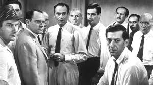
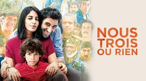

After 8 years being a flight attendant and travelling the world, I wanna become a Full-stack developper.
See for yourself|  |
12 Hommes en ColèreUn jeune homme d'origine modeste est accusé du meurtre de son père et risque la peine de mort. Le jury composé de douze hommes se retire pour délibérer et procède immédiatement à un vote : onze votent coupable, or la décision doit être prise à l'unanimité. Le juré qui a voté non-coupable, sommé de se justifier, explique qu'il a un doute et que la vie d'un homme mérite quelques heures de discussion. Il s'emploie alors à les convaincre un par un. |
|  |
Nous trois ou rienD’un petit village du sud de l’Iran aux cités parisiennes, Kheiron nous raconte le destin hors du commun de ses parents Hibat et Fereshteh, éternels optimistes, dans une comédie aux airs de conte universel qui évoque l’amour familial, le don de soi et surtout l’idéal d’un vivre-ensemble. |
Mauvaises HerbesWaël, un ancien enfant des rues, vit en banlieue parisienne de petites arnaques qu’il commet avec Monique, une femme à la retraite qui tient visiblement beaucoup à lui. Sa vie prend un tournant le jour où un ami de cette dernière, Victor, lui offre, sur insistance de Monique, un petit job bénévole dans son centre d’enfants exclus du système scolaire. Waël se retrouve peu à peu responsable d’un groupe de six adolescents expulsés pour absentéisme, insolence ou encore port d’arme. De cette rencontre explosive entre « mauvaises herbes » va naître un véritable miracle. |